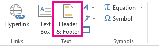
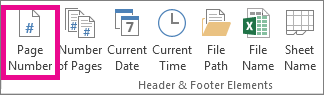
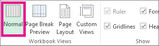

If you want numbers shown on pages when you print a Microsoft Excel worksheet, you can insert page numbers in the headers or footers of the worksheet pages. Page numbers that you insert are not displayed on the worksheet in Normal view— they are shown only in Page Layout view and on the printed pages.
Click the worksheet for which you want to insert page numbers.
On the Insert tab, in the Text group, click Header & Footer.

Excel displays the worksheet in Page Layout view. You can also click Page Layout on the status bar to display this view.
On the worksheet, click Click to add header or Click to add footer.
This displays the Header & Footer Tools, adding the Design tab.
To specify where in the header or footer you want the page number to appear, click inside the Left section, Center section, or Right section box of the header or footer.
On the Design tab, in the Header & Footer Elements group, click Page Number.

The placeholder &[Page] appears in the selected section.
If want to add the total number of pages, type a space after &[Page], type the word of followed by a space and then, in the Header & Footer Elements group, click Number of Pages.
The placeholder &[Page] of &[Pages] appears in the selected section
Click anywhere outside the header or footer area to display the actual page numbers in Page Layout view.
After you have completed working in Page Layout view, on the View tab, in the Workbook Views group, click Normal.

You can also click Normal on the status bar.
You can insert page numbers for a worksheet in Page Layout view, where you can see them, or you can use the Page Setup dialog box if you want to insert page numbers for more than one worksheet at the same time. For other sheet types, such as chart sheets, you can insert page numbers only by using the Page Setup dialog box.